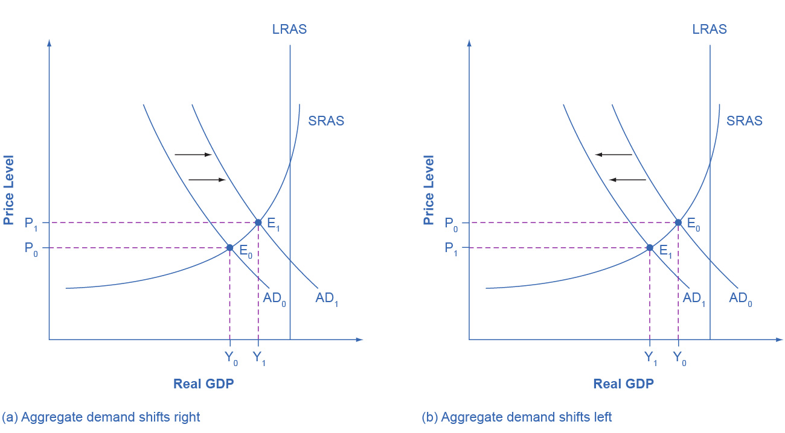
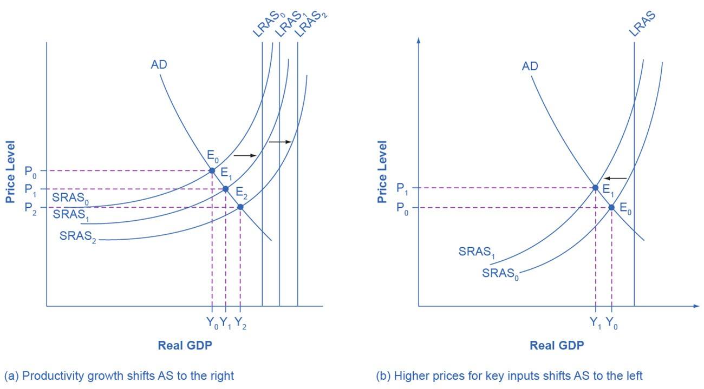

Changes to AD and AS
The factors that shift AD
The real wealth effect, the interest rate effect, and the foreign price effect explain what happens to the level of aggregate demand (i.e., GDP) when the price level changes. In short, each effect explains why, when the price level changes, we move to a higher or lower point on the aggregate demand curve. Since these changes are caused by a change to the price level (which is on the vertical axis), we don’t need to move the aggregate demand curve. It stays right where it is.
Aggregate demand (the whole curve) can increase, however. When it does, the curve will move to the right. And likewise, if aggregate demand decreases, then the curve will move to the left.

Since aggregate demand corresponds to quantities of real GDP, increases or decreases to aggregate demand are caused by changes to one of the components of GDP: consumption, investment, government spending, and the balance of imports versus exports. The primary reasons why these categories may increase or decrease are listed in tables 1a and 1b.
| Causes of a decrease to consumption | Causes of an increase to consumption |
|---|---|
| rise in taxes | decrease in taxes |
| fall in incomes | increase in incomes |
| increase in interest rates | decrease in interest rates |
| desire to save more | desire to save less |
| decrease in wealth | rise in wealth |
| fall in future expected incomes | rise in future expected incomes |
How government can affect AD
There are two primary ways that government policies can affect aggregate demand. One is by increasing or decreasing government spending. The other, listed under consumption, is raising and lowering taxes. These are important levers that the government has for affecting the level of GDP and unemployment, and so, we will investigate them separately in the section on fiscal policy.
| Causes of a decrease to investment | Causes of an increase to investment |
|---|---|
| increase in interest rates | decrease in interest rates |
| drop in business confidence | rise in business confidence |
| Causes of a decrease to govt. spending | Causes of an increase to govt. spending |
| reduction in government spending | increase in government spending |
| Causes of a decrease to net exports | Causes of an increase to net exports |
| decrease in foreign demand | increase in foreign demand |
| relative price increase of U.S. goods | relative price drop of U.S. goods |
Increases and decrease to interest rates
Of the factors that can change the investment portion of aggregate demand, the most important is changes to interest rates. Because interest rates can be changed—indirectly—by the Federal Reserve, this is a topic to which we will return when we examine monetary policy.
The changes to interest rates that we are discussing here are a little bit different than the interest rate effect. The interest rate effect describes interest rates changing in response to a change in the price level. When that happens, we track the change to real GDP by moving up or down the aggregate demand curve. In what we are examining now, interest rates are changing for some other reason; one that isn’t represented on the AD-AS graph. Once interest rates do change, however, it sets in motion the same changes to borrowing and spending—but the final result is that the aggregate demand curve shifts to the right or the left.
Higher interest rates tend to discourage borrowing and thus reduce both household spending on “big ticket” items like houses and cars and investment spending by businesses. The decrease to this purchasing will lower aggregate demand and so shift the curve to the left.
Conversely, lower interest rates will encourage borrowing by businesses that want to spend on investment and by consumers who want to make those big ticket purchases. This will cause aggregate demand to increase and so shift the curve to the right.
Increases and decreases to foreign demand
There are multiple factors that can affect the foreign demand for goods that are produced in the U.S., but we will focus on changes to exchange rates. First, let’s review how exchange rates work.
When you exchange U.S. dollars for a foreign currency, you are, in effect, buying the other currency. The U.S. dollar is stronger when $1 buys more of the foreign currency. The U.S. dollar is weaker when $1 buys less of the foreign currency. Stronger and weaker, in this sense, is with respect to one other currency and the historical trends.
For instance, as you can see here, in October 2022, 1 U.S. dollar bought slightly more than 1 Euro. At the beginning of 2024, meanwhile, 1 U.S. dollar bought a little over 0.90 Euro. So, relative to January 2024, the U.S. dollar was stronger in October of 2022. Conversely, in 2024, the U.S. dollar has been weaker relative to October 2022.
Now, how does this affect imports and exports?
A strong dollar causes exports to decrease and imports to increase.
A weak dollar causes exports to increase and imports to decrease.
The central idea is as follows.
-
Let’s say that, initially, 1 U.S. dollar (1 USD) buys 1 Euro (1 EUR). At the same time, for anyone in Europe, 1 EUR buys 1 USD. This will be our baseline.
-
Then, the exchange rate changes so that 1 USD buys 1.25 EUR. The U.S. dollar has gotten stronger. Now, with 1 USD (or however much we have), we can buy more stuff produced in Europe. Hence, imports from Europe will increase.
At the same time, with this exchange rate, 1 EUR buys only 0.80 USD (i.e., $0.80). Now, with 1 EUR (or however much they have), Europeans will be able to buy less of our stuff. This means that exports to Europe will decrease. -
The exchange rate changes again. Now, 1 USD buys only 0.75 EUR. The U.S. dollar has gotten weaker. With 1 USD (or however much we have), we can buy less stuff produced in Europe. Consequently, imports from Europe will decrease.
At the same time, with this exchange rate, 1 EUR buys 1.33 USD. Now, with 1 EUR (or however much they have), Europeans will be able to buy more of our stuff. This means that exports to Europe will increase.
Since a stronger dollar (relative to other major currencies) causes export to decrease and imports to increase, a stronger dollar will cause aggregate demand to decrease, shifting the AD curve to the left.
On the other hand, since a weaker dollar (relative to other major currencies) causes exports to increase and imports to decrease, a weaker dollar will cause aggregate demand to increase, shifting the curve to the right.
Factors that shift short-run aggregate supply curve
Productivity growth
Productivity growth will increase both long-run aggregate supply (LRAS) and short-run aggregate supply. Productivity is what it sounds like, and one way to measure it is as output per worker. This increases as workers become more educated, healthier, computers and computer programs improve, agricultural equipment and practices improve, factory equipment and practices improve, and so forth.
An increase in productivity will increase LRAS and SRAS. This is shown in the graph on the left in figure 2. Both SRAS and LRAS increase twice (starting from SRAS0 and LRAS0).
A decrease in productivity, which is less common, will decrease LRAS and SRAS.

Changes to the cost of inputs
Changes to the cost of all inputs, or to the cost of inputs that are particularly important for many products (e.g., oil, computer chips, or labor), will affect just the SRAS curve, not LRAS. An increase to the cost of inputs will decrease short-run aggregate supply (figure 2, right), while a decrease to these costs will increase short-run aggregate supply.